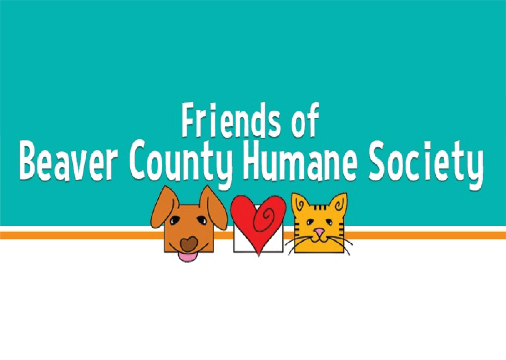

Beaver County Humane Society
Team
- Daniel Graf
- Pooja Penninti
- Hanson Zeng
Opportunity
Currently, the foster application requires bug fixes and functionality updates and so BCHS’s main problems are more directed towards refinement of the current solution rather than tackling a whole new problem. Most of their issues are dealing with small user issues that they have found over the past year while using their foster portal. These problems range from wanting portal notifications to the design of the current front end to issues with being able to reset a user’s password. With these issues, potential users will most likely turn away from the system and possibly fostering all together (which defeats the whole purpose of the system). With the improvements that we plan on implementing and overall, making the system more user friendly, we hope to prevent this loss of fosters and therefore help BCHS grow this part of their vision.
Outcomes
Over the course of our project, we developed new features and services for the client, while also improving the overall user experience for both the client and the potential users. These changes will allow them to be able to operate more efficiently and effectively. Because we changed the way that the sign-up form is presented, users are now able to sign up to be a foster in a much shorter time frame. As we also implemented an email notification system, fosters will also now be able to receive notifications regarding their application status. This same notification system will inform BCHS employees of whether they received a new application, thus allowing the client to have a smoother workflow when managing fosters. Lastly, we gave the old website a complete design overhaul, improving the user experience while also creating more fluidity between the BCHS website and the foster portal. Overall, our project improved the client organization’s capability in managing fosters and in reaching more potential fosters.
Deliverables
At the project’s conclusion, we will be providing technical documentation, design documents, and testing documentation in digital form in order to make future management and editing of the Foster Portal simpler. On top of these deliverables, we will also be deploying the current version of the Foster Application to the BCHS server.